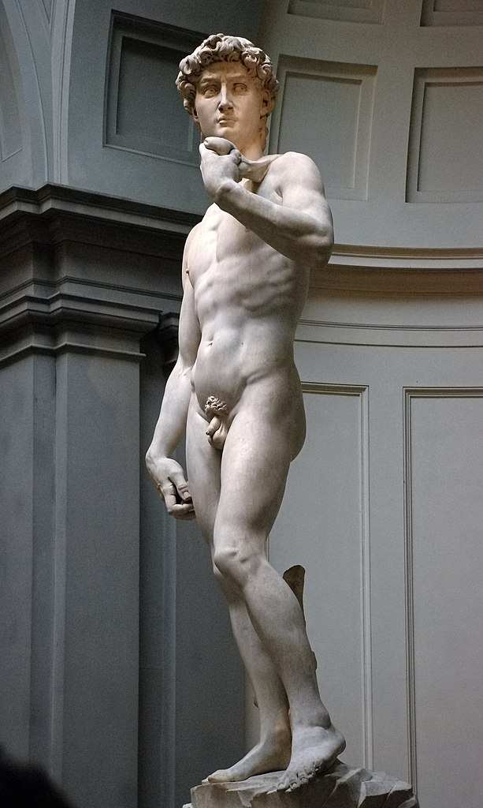
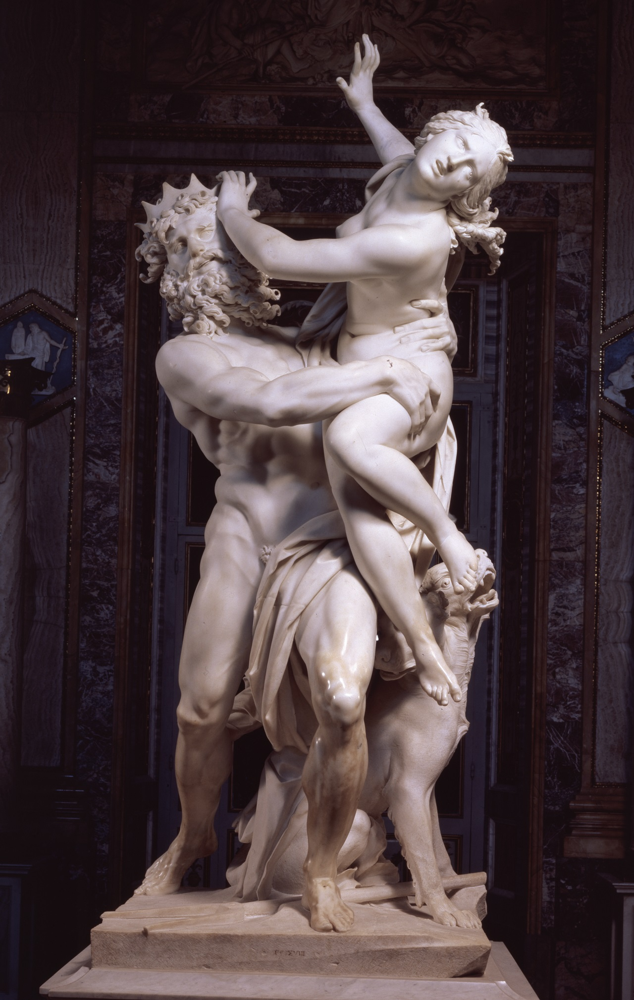

Highlights
Le opere più conosciute

David, Michelangelo
Vai alla pagina

Ratto di Proserpina, Gian Lorenzo Bernini
Vai alla pagina
Le visite guidate nel museo offrono ai visitatori un'opportunita' unica di esplorare le ricchezze culturali e storiche esposte all'interno delle gallerie. Un esperto guida del museo accompagna i partecipanti attraverso le diverse sezioni, fornendo informazioni dettagliate sulle opere d'arte, gli artefatti e i reperti in mostra.
Aperto tutti i giorni. Si invitano i visitatori ad entrare nel museo ed esplorare tutto cio'che ha da offrire. Si potranno trovare informazioni utili sulla storia, le mostre attuali, le attivita' e gli eventi in programma.
Aperto venerdi', sabato e domenica, solo la sera. I visitatori potranno esplorare il museo in un ambiente piu' intimo, riservato e affascinante. Sono presenti visite guidate notturne, eventi speciali ed esposizioni che trascendono l'esperienza tradizionale del museo.
Aperto sabato e domenica. Il Museo fornisce programmi e attivita' adatte a tutte le eta', spingendo i genitori a portare i propri figli per una giornata di apprendimento e divertimento insieme. Saranno presenti percorsi guidati, laboratori creativi, eventi speciali e materiali didattici pensati per coinvolgere sia i bambini che gli adulti.
Le opere più conosciute
Alcune tra le attivita' che proponiamo
Vieni con noi dentro la collezione del Museo per ascoltare le storie dietro alle opere d'arte
Racconti sui capolavori del Museo

Scarica l'applicazione!